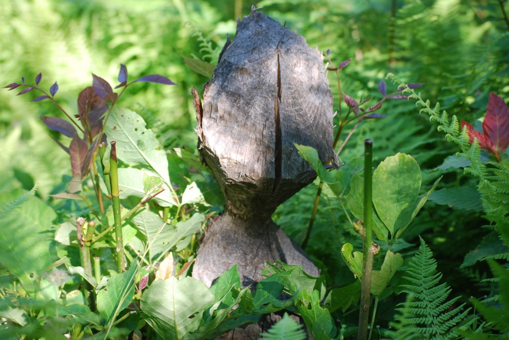
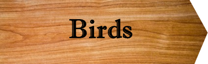

Contents:
Overview
Plants
Mammals
Birds
Reptiles & Amphibians
Human Activity
Mammals in the Wetlands
Moose frequent the wetlands to feed on its aquatic plants. One can often see their tracks on nearby forest roads and, if lucky, catch a glimpse of one knee deep in a pond. The omnipresent white-tailed deer also like the vegetation around wetlands, and bear feed on roots and bulbs in the surrounding muck, especially in early spring when they have emerged hungry from hibernation and there is little else to eat. Susan Morse of “Keeping Track” can easily find their claw and bite marks on Fairlee Wetland trees.
Naturally, the wetlands abound in beaver. Their stick houses and dams can be found in most of the ponds. Polished slides carved in the mud banks lead to well-traveled tracks up into surrounding woods littered with chips, felled trees, and conical stumps. In all likelihood, some of the bank slides are the work of other aquatic mammals as well – muskrat, mink, or even otter.
